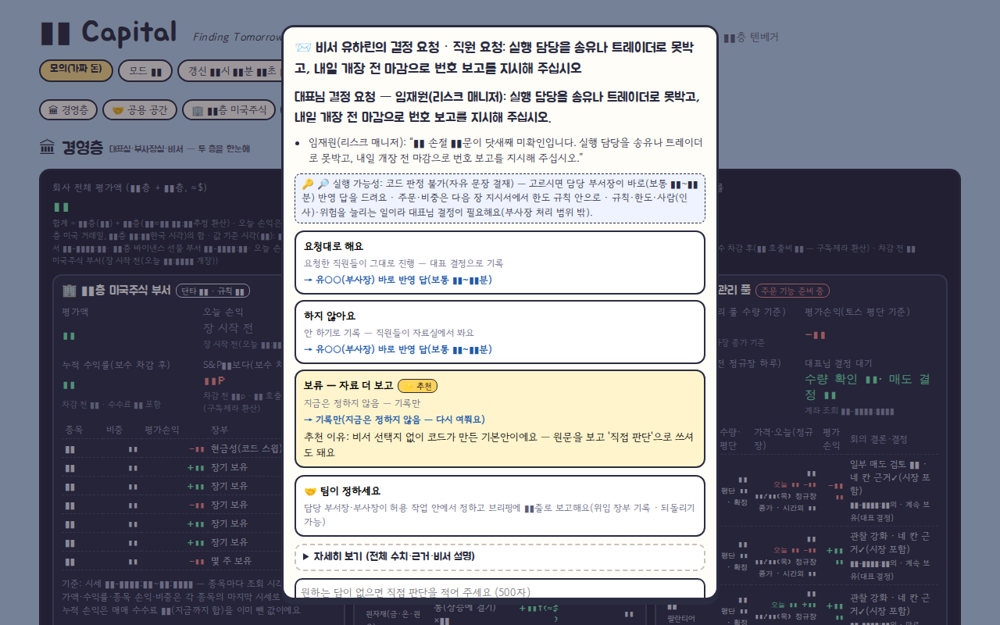

모의 가동
실험
📝 모의지금 작업 중Claude Code
TENX Capital (AI 증권) TENX Capital
AI 직원들이 위원회·부서로 일하는 모의 증권사 (1층 미국주식, 2층 바이낸스 선물)
AI 직원들이 회사 조직(위원회, 부서, 인사, 보고)처럼 일하며 모의 자산을 운용하는 가상 증권사다. 1층은 미국주식 모의 계좌, 2층은 바이낸스 선물 모의 계좌이며, 관리 풀에서는 대표 보유 종목에 대해 매도 결정만 내린다(실주문 단계는 아직 착수 전).
하루 리듬(장전 위원회, 장중 교대, 장후 정산·복기)을 스케줄러가 돌리고, 읽기 전용 FastAPI 사무실 화면과 텔레그램 수신기(지시·결재 버튼), 24시간 코인 당직 유닛, 매일 DB 백업 타이머가 함께 움직인다.
개발본(main)과 운영본(live 워크트리)을 분리해 감사 통과한 커밋만 fast-forward로 배포한다. 집계는 개발 저장소 기준이며 배포본·워크트리 중복은 제외했다.
- 기간
- 2026-09 ~ 2026-10-08
- 기술
pythonfastapisqlitetelegramsystemdtailscaleclaude-cli- 코드
- 124,411 줄
- 테스트
- 2,632 개
- 커밋
- 258
- systemd 유닛
- 8 개
세션 6 (Claude Code 6 · Codex 0 · 자동 호출 1)마지막 활동 2026-10-10
- 2026-10-10 16:12Claude Code결정 후 병목 해결
- 2026-10-10 15:05커밋W2 결재: 요청 칸 맥락 합치기(AISEC_ASK_CONTEXT) 수리 — 콜드 4차 재감사 PASS(대표 불만 '결재 내용 불명' 대응)
- 2026-10-10 14:18커밋Merge commit '6fcdfa3' into w2-int
- 2026-10-10 14:18커밋W2 결재·화면: 결재 주제 스레드(topic_id) + 숨김 좁히기(topic_id 정확 일치 + 잔여 0) + 자유문 판정 린트 + RACI
- 2026-10-10 13:25커밋W2 시장·체결: 2층 분할 집행 + 급락일 신규 보류 + 호가 실측·반스프레드 체결 모델(A3-06·A3-04) — 콜드 재감사 조건부 PAS
- 2026-10-10 13:20커밋W2 실돈 배선: 실/모의 장부 구조 분리 + 실잔고 대조 + live_gates + 주문 유닛 뼈대(10-09 대표 Q1·Q2) — 콜드 재감
- 2026-10-10 01:21커밋W1 통합: 화면 D-n 떼기 후 구분점 공백 정리(서버·화면 동일)
- 2026-10-10 01:20커밋W1 화면: 사장 한 장 첫 화면 + 건물 단면도 + 결정 팝업 자동 열림 끔 + 폴링 다이어트(10-09 대표 Q5) — 콜드 재감사 수리 완
- 2026-10-10 01:20커밋W1 백엔드: 결재·텔레그램 형식(FMT3) + 토스 환율 자동 + 하이쿠 상한·측정 + 주문 킬스위치 3중·실돈 상한·손익분기(10-09 대표
- 2026-10-09 18:24커밋cycle W2: 개선 후보 → 섀도 실험 → 판정(10-08 대표 D3·D6·D8) — 콜드 감사 조건부 PASS + P2-1·P3-4 수리
- 2026-10-09 17:11Claude Code(제목 없음)
- 2026-10-08 19:02커밋cycle W0+W1: 데이터·개선·피드백 순환 1단계(10-08 대표 D1~D10 추천대로) — 콜드 재감사 PASS
세션 제목과 커밋 제목만 표시합니다. 대화 내용·파일·경로는 공개하지 않습니다.
- 하루 사이클 스케줄러(장전 위원회·장중 루프·장후 정산)
- AI 직원 조직: 위원회, 부서, 인사 평가, 메모리, 규칙 점검
- 1층 미국주식 모의 운용과 2층 바이낸스 선물 모의 운용
- 교대 근무(야간 장중·24시간 코인 당직, 읽기·경보 전용)
- 읽기 전용 사무실 웹 화면(FastAPI)
- 텔레그램 수신기: 지시와 결재 버튼
- 관리 풀: 대표 보유 종목 매도 결정(실주문은 미착수)
- AI 호출 일/주 상한과 사용량 장부
- DB 마이그레이션과 일일 온라인 백업·무결성 검사
- 개발/운영 워크트리 분리 배포(fast-forward)
서비스active
마지막 커밋2026-10-10
데이터 기준2026-10-10 16:12
테스트 수2,632
실적·잔고·수익률은 공개 정책상 표시하지 않습니다(설정으로 켤 수 있음). 상태는 PC 의 빌더가 10분마다 읽어 올립니다.
실제 화면을 찍은 뒤 숫자·식별자를 자동으로 가린 스크린샷입니다.

- 운영 코드와 데이터를 분리(워크트리 live 브랜치 + 공용 data)해 미커밋 변경이 운영에 들어가지 않게 함
- 전수 감사에서 나온 수리를 단계별 로드맵으로 배포하고 모든 변경에 독립 감사를 필수화
- 스케줄러 종료 신호는 크래시가 아니라 interrupted로 구분하고 종료 대기시간을 늘림
- 운영 DB 정정은 dry-run 기본의 전용 CLI로만 수행
- 위원회 시간대·미국장 중 재시작을 피하는 배포 규칙
이 프로젝트에 등록된 아이디어가 아직 없습니다.